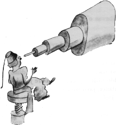
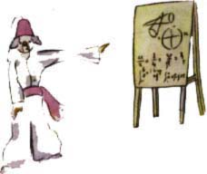
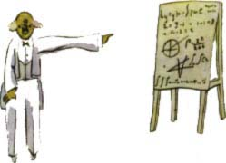

To mì nemohlo pøíli¹ pøekvapit. Dobøe jsem vìdìl, ¾e kromì velkých planet, jako jsou Zemì, Jupiter, Mars, Venu¹e, které dostaly jméno, existují je¹tì stovky jiných, které jsou nìkdy tak malé, ¾e dá hodnì práce spatøit je aspoò dalekohledem. Kdy¾ hvìzdáø takovou planetu objeví, dá jí místo jména èíslo. Nazve ji napøíklad asteroidem 3251.
Mám vá¾né dùvody domnívat se, ¾e planeta, odkud pøi¹el malý princ, je planetka B 612.
Jen jednou ji uvidìl dalekohledem v roce 1909 nìjaký turecký hvìzdáø. Podal tehdy o svém objevu obsáhlý výklad s ukázkami na mezinárodním astronomickém kongresu. Ale nikdo mu nevìøil, proto¾e byl nezvykle obleèen. Dospìlí jsou u¾ takoví.
Na¹tìstí pro dobrou reputaci planetky B 612 pøinutil jeden turecký diktátor svùj lid pod trestem smrti, aby se oblékal po evropsku. Hvìzdáø pøedvedl svùj výklad znovu v roce 1920 ve velmi elegantním fraku. A tentokrát mu v¹ichni dali za pravdu.

Vyprávìl jsem vám tyto podrobnosti o planetce B 612 a povìdìl jsem vám její èíslo jen kvùli dospìlým. Dospìlí si potrpí na èíslice. Kdy¾ jim vypravujete o novém pøíteli, nikdy se vás nezeptají na vìci podstatné. Nikdy vám neøeknou: "Jaký má hlas? Které jsou jeho oblíbené hry? Sbírá motýly?" Místo toho se vás zeptají: "Jak je starý? Kolik má bratrù? Kolik vá¾í? Kolik vydìlává jeho otec?" Teprve potom myslí, ¾e ho znají. Øeknete-li dospìlým: "Vidìl jsem krásný dùm z èervených cihel, za okny mu¹káty a na støe¹e holuby...", nedovedou si ho pøedstavit. Musíte jim øíci: "Vidìl jsem dùm za sto tisíc frankù." Tu hned zvolají: "Ach, to je krása!"
A tak øeknete-li jim: "Dùkazem, ¾e malý princ skuteènì existoval, je to, ¾e byl rozko¹ný, ¾e se smál a ¾e chtìl beránka. Chce-li nìkdo beránka, je to dùkazem, ¾e ¾ije", pokrèí rameny a budou s vámi jednat jako s dítìtem. Øeknete-li jim v¹ak: "Planeta, odkud pocházel, je asteroid B 612", tu je pøesvìdèíte a dají vám pokoj s otázkami. Jsou u¾ takoví! Nesmíme se na nì zlobit. Dìti musí být k dospìlým hodnì shovívavé.
Ov¹em my, kteøí chápeme ¾ivot, nestaráme se vùbec o èísla. Byl bych rád zaèal vyprávìt tento pøíbìh tak, jak zaèínají pohádky. Byl bych rád øekl: "Byl jednou jeden malý princ. Bydlil na jedné planetì a ta byla o málo vìt¹í ne¾ on sám. A ten malý princ potøeboval pøítele..."
Tomu, kdo chápe ¾ivot, by se to zdálo mnohem pravdivìj¹í. Nechci toti¾, aby se má kniha èetla lehková¾nì. Je to pro mne velmi bolestné, kdy¾ mám vypravovat tyto vzpomínky. Je tomu ji¾ ¹est let, co mùj pøítel ode¹el s beránkem. Sna¾ím-li se ho tu popsat, dìlám to proto, abych na nìho nezapomnìl. Je smutné zapomenout na pøítele. Ka¾dý nemá pøítele. A mohu se stát jednou takovým jako dospìlí, kteøí se u¾ nezajímají o nic jiného ne¾ o èíslice. Proto jsem si tedy koupil krabici barev a tu¾ky.

Je to tì¾ké, v mém vìku se dát znovu do kreslení, kdy¾ se èlovìk nepokusil o nic jiného ne¾ v ¹esti letech o zavøeného a otevøeného hrozný¹e! Pokusím se ov¹em nakreslit portréty co nejvìrnìji. Ale nejsem si tak docela jistý, zda se mi to podaøí. Jedna kresba se zdaøí, a druhá u¾ ne. Nemohu také dobøe vystihnout jeho postavu. Tu je malý princ pøíli¹ velký, tam zase pøíli¹ malý. Váhám také, jakou barvu dát jeho obleku. A v¹elijak tápu, hned je to dobøe, hned ¹patnì. Zmýlím se mo¾ná v nìkterých dùle¾itìj¹ích podrobnostech, ale to u¾ mi musíte prominout. Mùj pøítel nikdy nic nevysvìtloval. Asi myslel, ¾e jsem takový jako on. Ale já bohu¾el nedovedu vidìt beránky pøes bednièku. Jsem snad trochu jako dospìlí. Asi jsem zestárnul.
